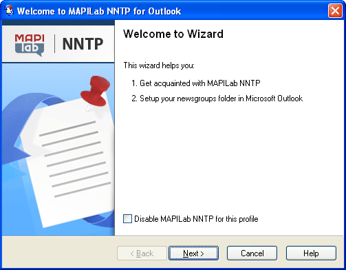
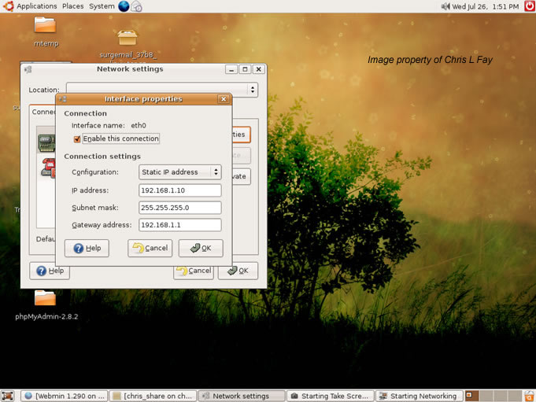

Hepimizin de bildiği gibi iletişim, yaşamımızın ayrılmaz bir parçasıdır. Nasıl ki birbirimizi anlayabilmek, hayatımızı sürdürebilmek, karşılıklı anlaşabilmek için belirli iletişim yöntemlerine ihtiyaç duyuyorsak, bilgisayarlar da birbirleri ile iletişim kurma ihtiyacı duymaktadırlar. Peki, bu iletişimi ne ile yapıyorlar? Bilgisayarlar birbirleri ile anlaşabilmek, ortak birimler kullanabilmek ve veri aktarımı yapabilmek için, belirli bir kurallar topluluğuna ihtiyaç duymaktadırlar. İşte bu kurallar topluluğu protokolleri oluşturmaktadır.
AĞ PROTOKOLLERİ
Verinin ağa bırakılması ile başlayıp, paketlenmesi, iletiliş yolunun belirlenmesi ve iletilmesi olaylarının tamamını denetleyen kuralar bütününe ağ protokolü denilmektedir. Veri, hedef bilgisayara iletildiğinde, o an o bilgisayarda olan veri ile yeni gönderilen verinin aynı olup olmaması durumunu da denetlemek ağ protokolünün görevleri arasındadır.
TCP/IP MİMARİSİ VE KATMANLARI
İnternet ağ mimarisi, katmanlı bir yapıya sahiptir. Eğer uygulama katmanını saymaz isek temelde 4 katmanlı bir yapıya sahip olan TCP/IP Mimarisi günümüzün temel ağ protokolü halini almıştır. Her katmanda gerçekleştirilecek işin protokoller tarafından paylaşıldığı bu sistem, aslına bakıldığında TCP ve IP dediğimiz iki ana katmandan ve altındaki 4 katmandan oluşmaktadır. Fakat iki ana protokol birlikte çalıştığından TCP/IP diye bilinmektedir.
Bu mimaride, kullanıcının kullandığı programlar ve işletim sisteminin arka planda yürüttüğü programlar uygulama katmanı içerisinde, uygulama programları olarak adlandırılırlar. Uygulama katmanlarının altında bulunan katmanlar ise iletişimden sorumludurlar. İletişim katmanında yapılacak işlemler sırasında her katman bir altındaki katmanın işini yapmasını beklemektedir.
UYGULAMA KATMANI PROTOKOLLERİ
Bu katman, bir üstünde bulunan katmanda yer alan işletim sisteminin kullanıcı ara yüzlerinin sunumunda görev almaktadır. Uygulama katmanında bulunan farklı protokoller, kullanıcıya verdikleri hizmetlerine göre değişiklik göstermektedirler.

SMTP (Simple Mail Transport Protocol-Basit Posta Aktarım Protokolü)
Bir e-posta gönderileceği zaman, POP3 hizmetinden de yararlanan basit posta aktarım protokolleri kullanılmaktadır. SMTP, e-postanın hedef kullanıcıya aktarılması sürecini denetlemekle görevlendirilmiştir. POP3 hizmeti tarafından gönderici bilgisayardan hedef bilgisayara e-postayı alırken, SMTP de sunucular arasındaki e-posta alışverişini sağlamaktadır.

SNMP (Simple Network Management Protocol-Basit Ağ Yönetim
Ağ donanımları arasında bulunan yönlendirici, anahtar, hub(göbek) gibi bağlantı kurulumunda etkin rol oynayan birimlerin denetlenmesinden sorumludur. SNMP desteği olan ağ elemanları, posta alışverişi yolu ile uzaktan denetlenebilmektedirler.

TELNET (Telecommunication Network-İletişim Ağı)
Kullanıcının bir makineden başka bir makineye sanki o makineden giriyormuşçasına ulaştığı, o bilgisayarı yönlendirebildiği ve istediği işlemleri yürütebildiği ağ ortamını düzenleyen protokoldür.
FTP (File Transfer Protocol-Dosya Aktarım Protokolü):
Bir bilgisayardan başka bir bilgisayara veri aktarılması işlemini gerçekleştiren, internet ortamındaki bilgisayarlar arasındaki dosya aktarım olayının temelini oluşturan protokoldür.

NNTP (Network News Transport Protocol-Ağ Haberleri Aktarım Protokolü)
USENET postalanma hizmetinin gerçekleştirilmesi olayını denetlemekten sorumludur.

HTTP (The Hypertext Transfer Protocol-Yüksek Metin İletişim Protokolü)
Web sayfalarının veri alışverişini sağlayan protokoldür.
ULAŞIM KATMANI PROTOKOLLERİ
Bir üst katmandan gönderilen verinin paketlenmesini sağlayan ve ardından paketlenmiş veriyi bir alt katmana ileten protokoldür. Verinin boyutunun çok fazla olması durumunda, veri bir alt katmana parçalar halinde gönderilir, gönderilirken karışıklığa engel olmak amacıyla bu parçaların her birine sıra numarası verilir. Bu işlemleri genellikle TCP üstlenmektedir. Sorgulama işlemlerini ise UDP yapmaktadır.
YÖNLENDİRME KATMANI PROTOKOLLERİ
İçerisinde IP ve ICMP olmak üzere iki tip protokolün tanımlandığı bu katman, bir üst katmandan aldığı segmentleri alıcıya, uygun yoldan ve hatasız bir şekilde iletmekten sorumludur. Bu amaçla IP katmanında, katmana gelen her segmente bir IP numarası verilmektedir. ICMP protokolü ise sistemler arasındaki iletişimi, kontrol mesajları göndererek denetleme yapmaktadır.
FİZİKSEL KATMAN PROTOKOLLERİ
Bu katmanda herhangi bir protokol tanımlı değildir. IP başlığı eklenmiş bir segment aynı zamanda hem kaynak bilgisayarın IP numarasını hem de hedef bilgisayarın IP numarasını taşımaktadır. Yerel ağ içerisinde işlem yapılacağı zaman, hedef bilgisayarın Ethernet kartının MAC (Media Access Control-Ortama Erişim Adresi) adresinin biliniyor olması gerekmektedir. Bu işlemi gerçekleştirmek için ise ARP (Adress Resolution Protocol-Adres Çözümleme Protokolü) kullanılmaktadır. İletişime geçeceği makinenin IP adresini bilen bir bilgisayar ARP protokolü ile IP adresini ağdaki bütün bilgisayarlara gönderir. Ağda bulunan tüm bilgisayarlar bu mesajı alırken, mesajdaki IP adresine sahip olan bilgisayar kendi MAC adresini karşı bilgisayara iletirler ve böylece iletişim sağlanmış olur.

ADRES ÇÖZÜMLEME PROTOKOLLERİ
Günümüz teknolojisine bakıldığında açıkça görülmektedir ki Ethernet teknolojisi ağ bağlantıları alanının hakimi durumundadır. Ethernet teknolojisini kısaca incelemek gerekirse, ağ bağdaştırıcı kartların (ethernet kartları) birbirleri ile iletişime geçebilmeleri için her birine üretilmeleri sırasında, 48 bitlik özel fiziksel adresler tanımlanmıştır. Fakat TCP/IP protokol kümesinde 32 bitlik IP adresleri kullanılmaktadır. Eğer hem TCP/IP protokolü kullanılıp hem de ethernet kullanılacak ise iletişimin sağlanabilmesinde dönüştürücü görevini üstlenecek bir ara birime ihtiyaç duyulmaktadır. Bu birim ARP tablolarıdır.

Sonuç olarak TCP/IP denilen bir protokol kümesi olmasaydı, günümüzün iletişim kaynakları olamayacaktı. Tabii ki olurdu ama bu kadar etkili ve hızlı olur muydu düşünülmesi gereken bir nokta. Bu sayımızda ağ protokollerine genel bir çerçeveden baktık. Bir sonraki sayımızda TCP/IP protokoller kümesinin yapısına değineceğiz. Bir sonraki makalemizde görüşmek dileğimle.
Hoşçakalın.